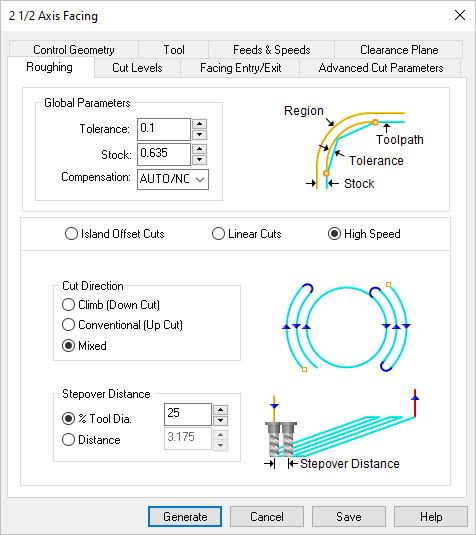
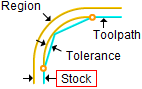
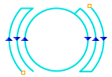
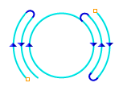
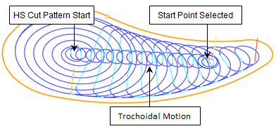
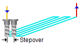

The following Roughing tab allows you to define the roughing parameters for the current 2½ Axis Facing operation. You can set Global Parameters, Cut Pattern, Cut Direction and the Stepover Distance via this tab of the operation dialog. Refer to each option below.
 Dialog Box: Roughing tab, 2½ Axis Facing Operations |
The Global Parameters section allows you to set the tolerance value to be used in machining. A uniform thickness or stock that needs to be left around the part can be specified here. Tolerance This is the allowable deviation from the actual part geometry plus the Stock allowance (if any). In 2 Axis methods, this Tolerance is applied to XY motions only.  Tolerance
Stock This is the thickness of the layer that will remain on top of the part after the toolpath is complete. Roughing operations generally leave a thin layer of stock. For finishing operations this value is zero.  Stock Compensation This enables cutter compensation. The compensation direction, left or right, is determined by the Cut Direction selected (Climb or Conventional). |

The following cut parameters matrix lists each Cut Parameter assigned by the three available Cut Patterns: Islant Offset, Linear and High Speed. The definitions of each Cut Parameter are shown below the matrix table.
|
||||||||||||||||||||||||||||||||||||||||||||||||||||
Island Offset Cuts In this Cut Pattern the tool will traverse in successive uniform offsets of the part shape. 
Linear Cuts Select Linear and the tool will traverse in a Linear cut beginning at the Top or Bottom depending on the Start Point selection.  Linear High Speed Select High Speed to add progressive arc-shaped passes that reduces tool pressure and keeps chip load more consistent, allowing for higher cut feedrates.  High Speed When the High Speed cut pattern is selected with a Start Point defined, a trochoidal motion is added between the Start Point and the start of the High Speed motion cut pattern.  Trochoidal Start Cut Motion |
Climb (Down Cut) Select Climb (Down Cut) and the tool will be maintained in a downward motion into the stock. ") Climb (Down Cut) Conventional (Up Cuts) Select Conventional (Up Cut) and the direction of the tool will be maintained in an upward motion out of the stock. ") Conventional (Up Cut) (Mixed) Select Mixed and the direction of cutting is alternated between each parallel plane. This is a mixture of both Climb and Conventional cutting of the stock.  Mixed
Angle of Cuts Specify the Angle of Cuts (0-360) measured from the X Axis. This additional parameter is available for some operations when a linear cut pattern is used.
|
 One of the basic concepts to understand in any milling operation is
One of the basic concepts to understand in any milling operation is 
Select the starting location for the cut. This is not an exact point coordinate but a general location of Top or Bottom. Start at Bottom Select this option if you want the starting locating for the cut pattern to begin at the bottom of the cut pattern (i.e., min Y).  Start at Bottom Start at Top Select this option if you want the starting locating for the cut pattern to begin at the top of the cut pattern (i.e., maximum Y).  Start at Top |
Lift Cut During the High Speed cut pattern use this parameter to lift the cutting tool during transfer motions. 0 (Zero) means that the tool will not list. Enter a positive value and the tool will lift this amount in +Z prior to executing a cut transfer motion. Feedrate Factor During the High Speed cut pattern use this parameter to control the feed rate when the cutting tool is lifting and plunging before and after each cut transfer motion. The value is a percentage of the Cut Feed (Cf) parameter for this operation (i.e., 50 = 50% of the (Cf) feed rate). |
% Tool Dia. Specify the stepover distance for the current operation as a percentage of the active tool diameter (% Tool Dia) and then enter the percentage value.  % Tool Dia. Distance Specify the stepover for the current operation as an exact Distance and then enter the distance value in the field provided. Distance |
Automatically detect corners that the tool could not reach between cut level and add a toolpath based on the uncut area detected. Either Linear or Offset cut patterns are used in these areas.
|